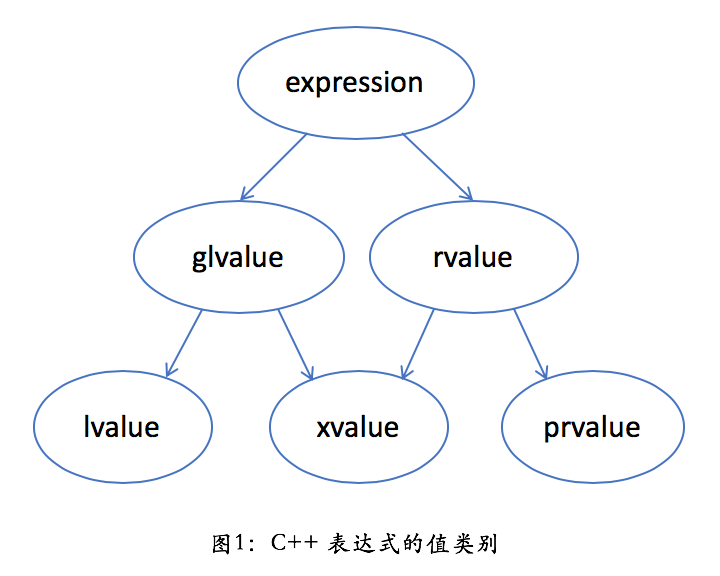
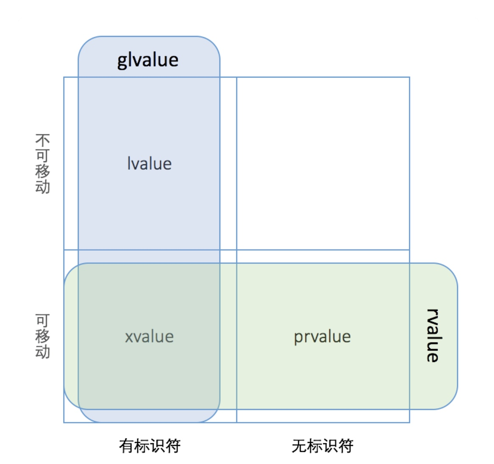

左值和右值
- 左值 能用在赋值语句=左边的东西
- C++表达式要么是左值，要么是右值
- i = i + 1 i有右值属性，i出现在左边，拥有左值属性
- 赋值运算符
- 取地址
- string vector []左值 iter是迭代器
- 看一个运算符在一个字面值能不能操作
- 左值表达式 左值
- 右值表达式 右值
引用分类
- 左值引用 绑定到左值
- const引用 左值引用
- 右值引用 绑定到右值，临时对象
左值引用
- 左值引用不能绑定到右值
- const 左值引用可以绑定到右值
右值引用
- 来绑定一些临时对象和即将销毁的对象
- 右值引用理解为对象
- 绑定到坐值的引用，一般都不能绑定到右值
- &&代表新的数据类型
- 提高程序运行效率，把拷贝对象变成移动对象，转换对象的所有者
- 移动对象如何发生 移动构造函数，应付移动构造函数
总结
- 返回左值引用的函数，连同赋值，下标，解引用都是左值引用 --i
- i-- 右值引用
- ++i ++i直接给变量i+1,然后返回i本身
- i是变量，所以可以被赋值
- 右值引用的变量本身是左值
- 任何函数的行参都是左值func(int&& w) w是左值
- 临时对象都是右值
- 如果一个 prvalue 被绑定到一个引用上，它的生命周期则会延长到跟这个引用变量一样长。
std::move
指分左右

- 一个 lvalue 是通常可以放在等号左边的表达式 左值
- 一个 rvalue 是通常只能放在等号右边的表达式，右值
- 一个 glvalue 是 generalized lvalue，广义左值
- 一个 xvalue 是 expiring lvalue，将亡值
- 一个 prvalue 是 pure rvalue，纯右值
对比
smart_ptr<shape> ptr1{new circle()};
smart_ptr<shape> ptr2 = std::move(ptr1);
- std::move(ptr) 就有趣点了。它的作用是把一个左值引用强制转换成一个右值引用，而并不改变其内容。从实用的角度，在我们这儿 std::move(ptr1) 等价于 static_cast&&>(ptr1)
- 把 std::move(ptr1) 看作是一个有名字的右值。为了跟无名的纯右值 prvalue 相区别，C++ 里目前就把这种表达式叫做 xvalue。跟左值 lvalue 不同，xvalue 仍然是不能取地址的——这点上，xvalue 和 prvalue 相同。所以，xvalue 和 prvalue 都被归为右值 rvalue
- 
字符串绑定
string str{"I love china"};
string& s1{str};
//左值引用不能绑定到临时变量,临时变量被系统当右值
//string& s2{"I love china"};
//const引用绑定到右值，执行隐式转换并放入string临时变量
const string& s3{"I love china"};
//string&& s4{s3};
string&& s5{"I love China"};//可以绑定到一个临时变量，
Move函数
int tmp = 10;
int& l1 = tmp;
int&& l2 = tmp * 100;
const int& l4 = i * 100;
const int&& r5 = i * 100;
//成功绑定右值,但是此后r6的值和tmp没有关系
int&& r6 = tmp++;
tmp = 12;
printf(" %d %d \n", r6, tmp);
int&& r7 = std::move(tmp);
r7 = 35;
printf(" %d %d \n", r7, tmp);
int&& r8 = 100;
int&& r9 = std::move(r8);
printf(" %d %d \n", r8, r9);
string st = "Im ok";
//sring移动构造函数把st的内容拷贝到def，def重新开辟内存,同时把st清空
//string def = std::move(st);
//sring移动构造函数把st的内容拷贝到def，def重新开辟内存,同时把st清空
string&& sr = std::move(st);
cout << sr << " " << st << endl;
返回值优化
- 一个本地对象意味着这个对象会被拷贝，除非编译器发现可以做返回值优化（named return value optimization，或 NRVO